MfG
OMT – 2025
Orlandi Mono Typeface
Orlandi Mono is a typeface inspired by documents I found in a documentary about the disappearance of the girl Emanuela Orlandi in the Vatican from 1985. In combination with the aim of creating a typeface with a very high x-height and a short descenders, I drafted Orlandi. A monotype intended for large applications such as posters or headlines.
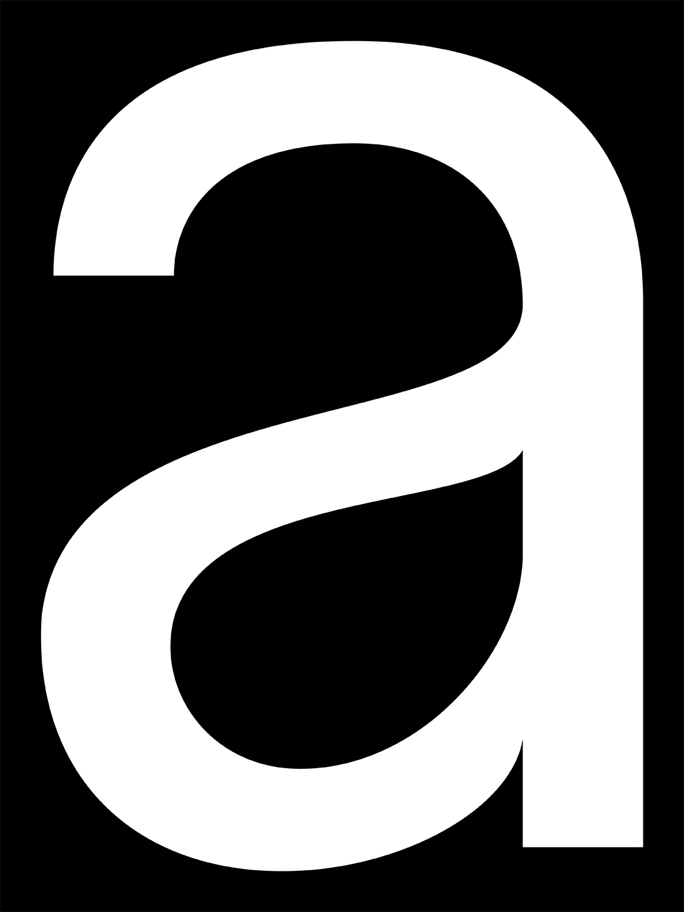
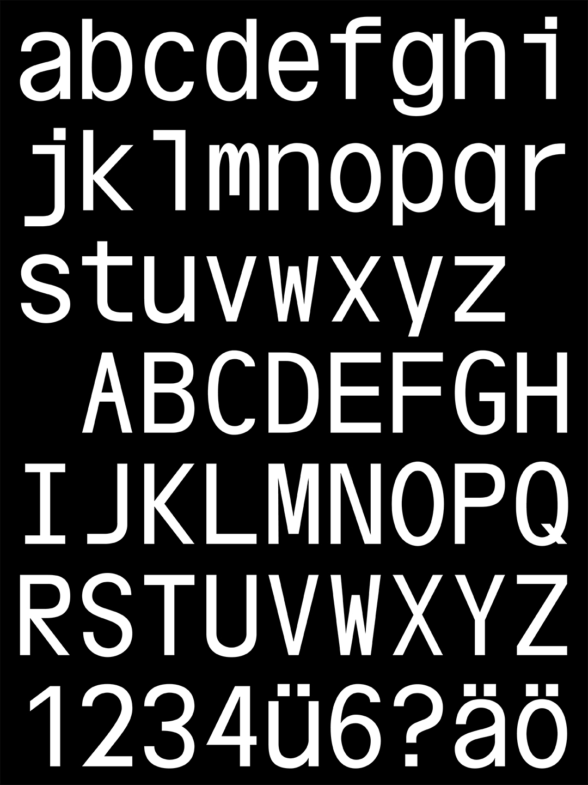
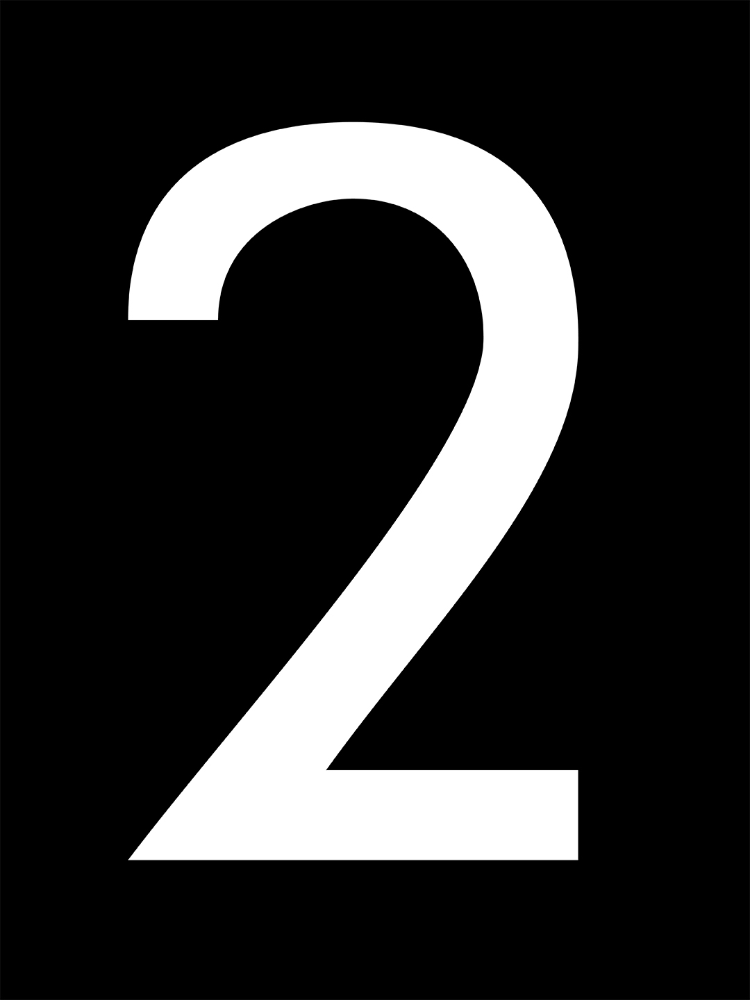
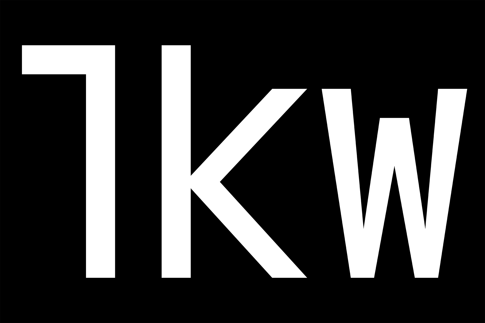
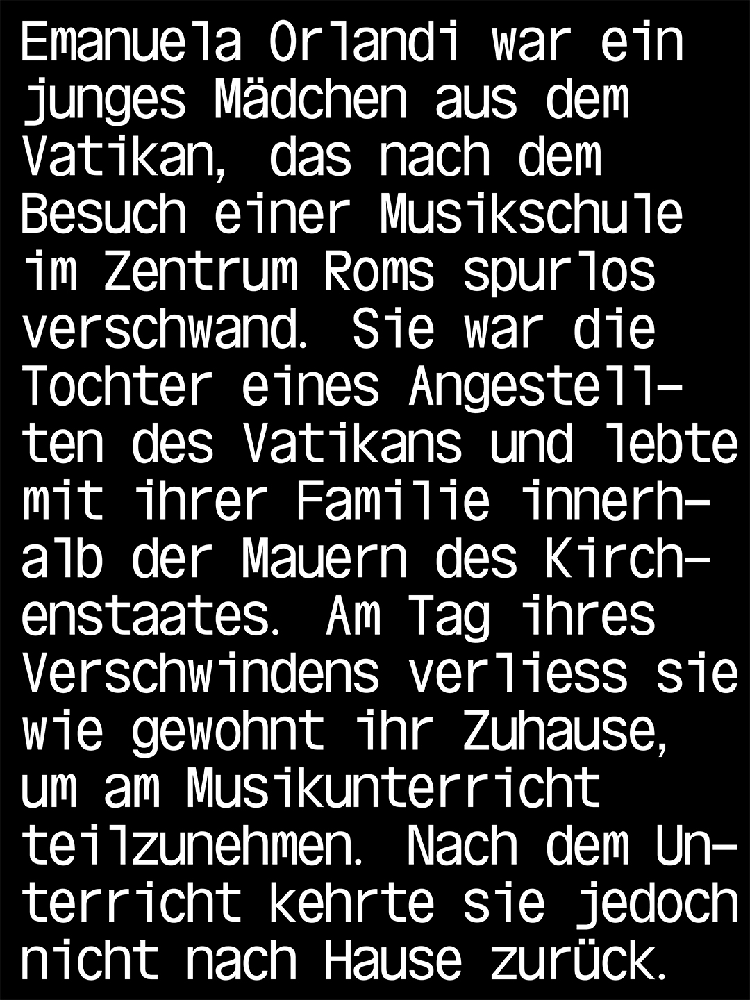
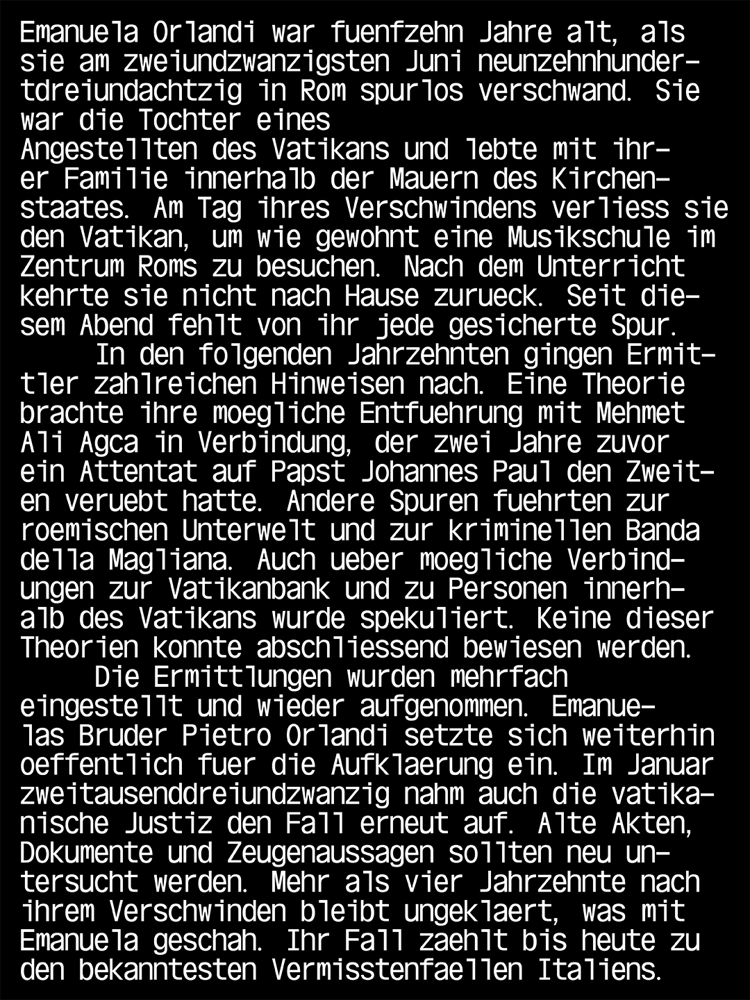
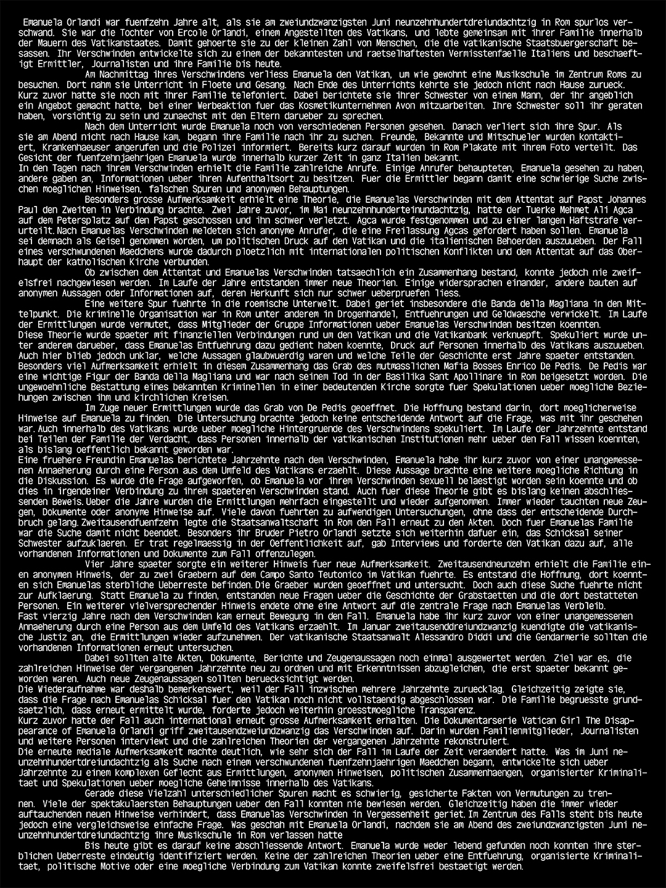
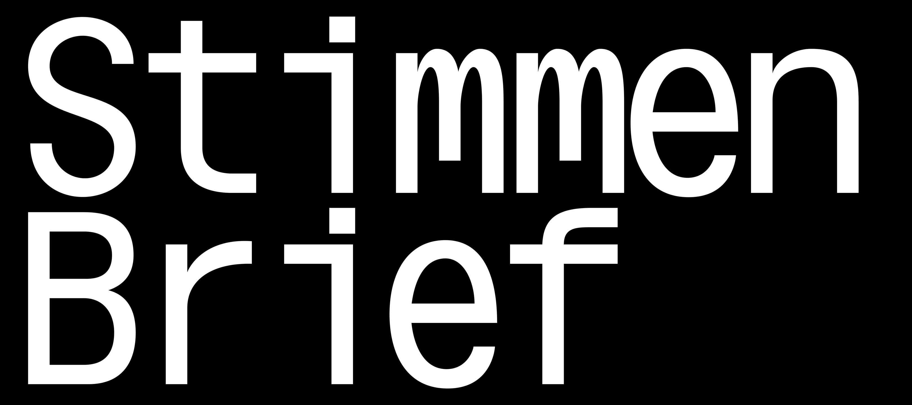
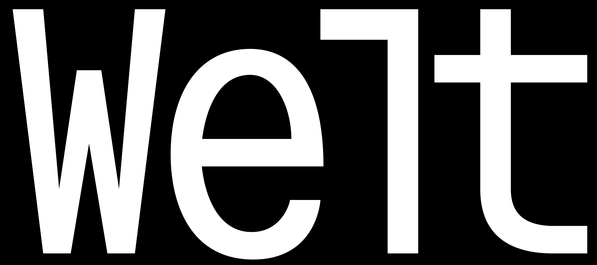
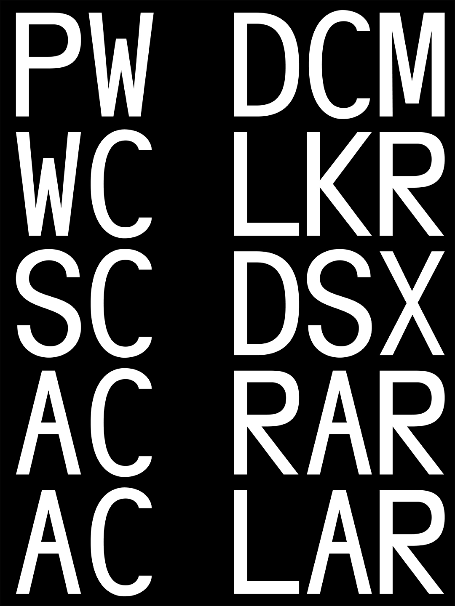
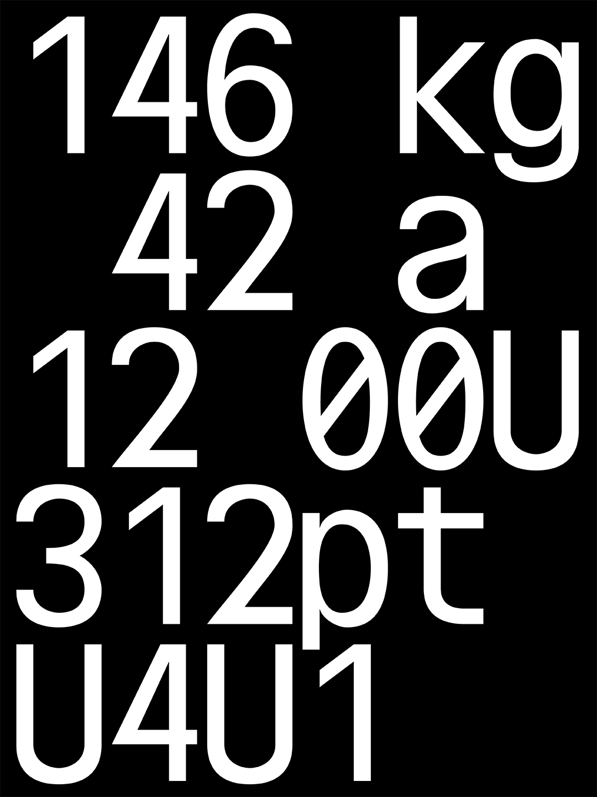
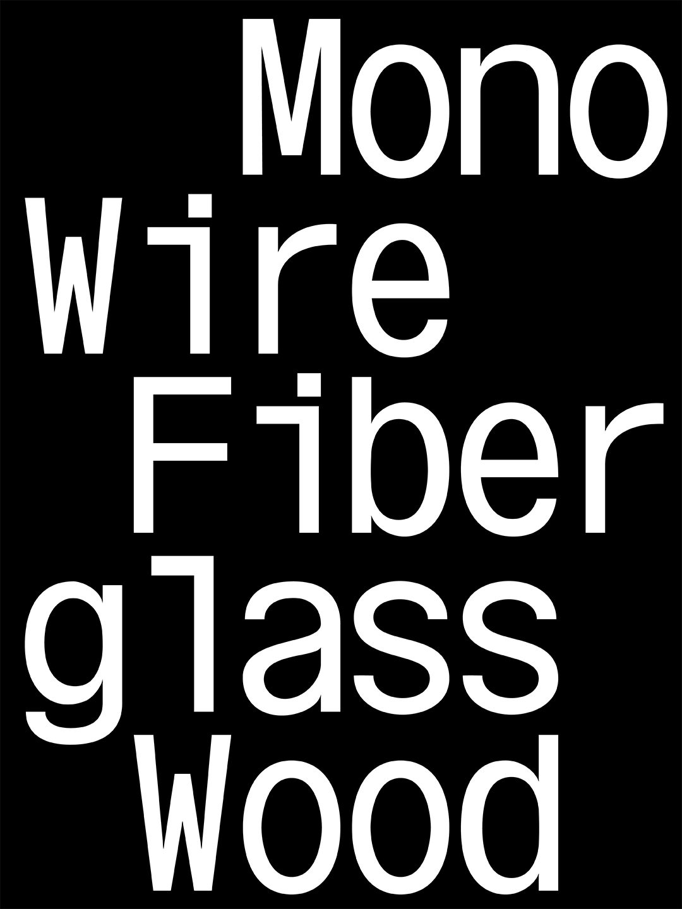
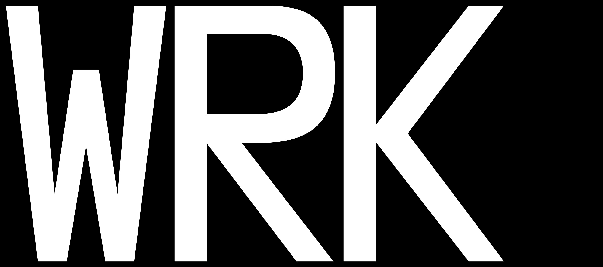